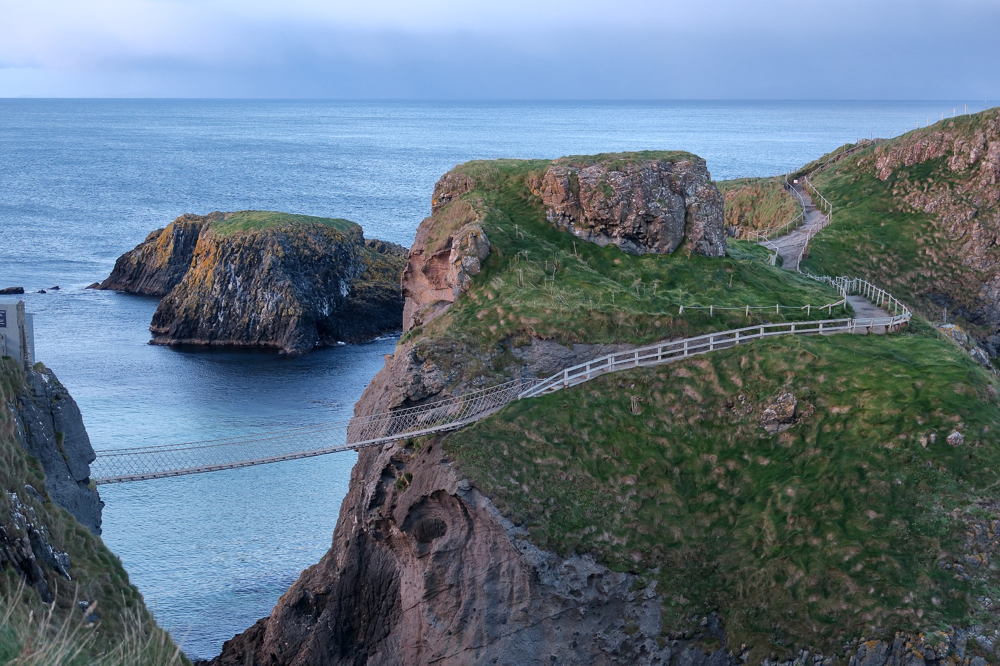
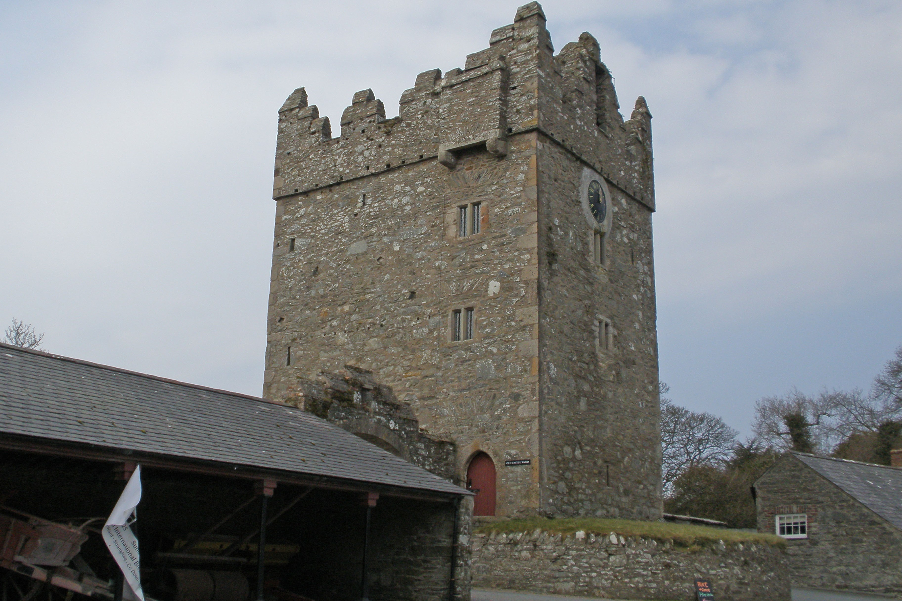
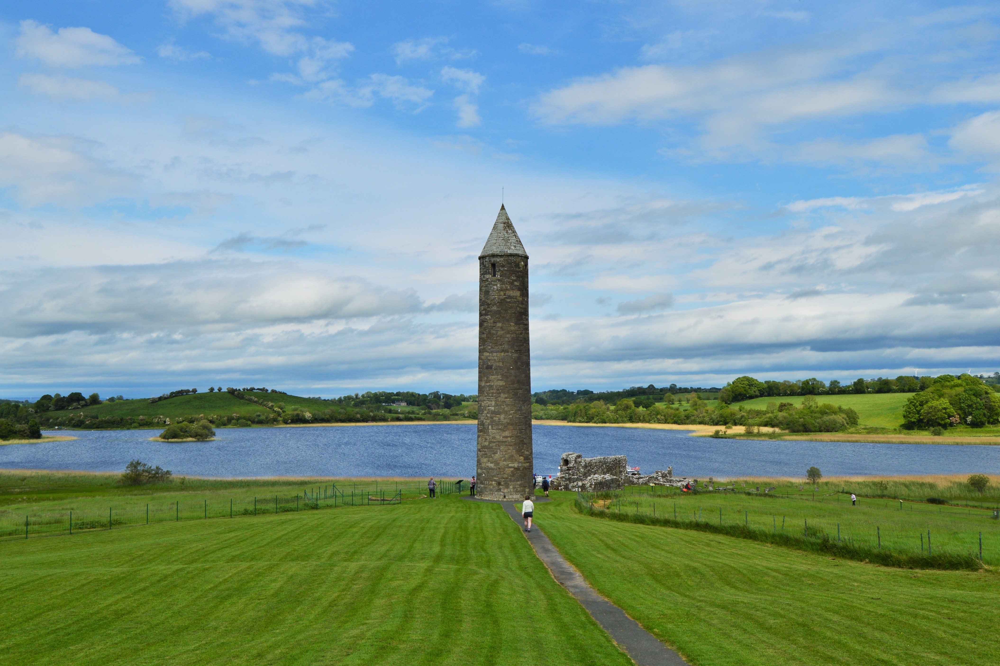
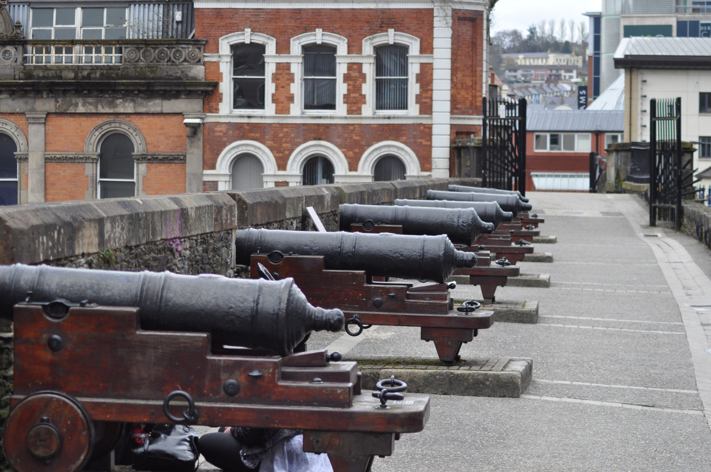
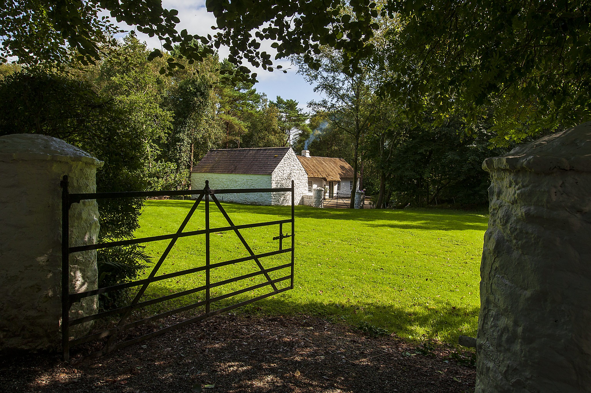

Carrick-a-Rede rope bridge - County Antrim
Observatory and Planitarium - County Armagh

Castle Ward - County Down

Devenish Island - County Fermanagh

City Walls - County Londonderry

Ulster American Folk Park - County Tyrone